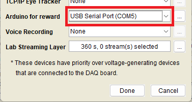
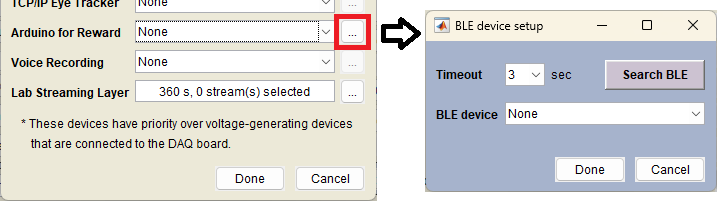

Arduino for Reward
The previous method using Arduino Uno + HC-05 is now deprecated. To upload the custom sketches provided on this page to an Arduino board, you will need the Arduino IDE. The MATLAB Support Package for Arduino Hardware is not necessary.
1. Wired Connection (USB)
In this setup, an Arduino board is connected to the NIMH ML computer via a USB cable and sends TTL signals to reward devices through its digital pins.
Steps:
- Upload the provided sketch (Arduino_via_USB.zip) to your Arduino board.
- Open the [Other device settings (USB, etc.)] menu and select the COM port assigned to the board under [Arduino for Reward].

- Connect your reward device(s) to the digital pins D2 to D12 on the Arduino. These pins correspond to JuiceLine 1 to 11 in the goodmonkey function. (Note: Only one digital pin can be triggered at a time.)
2. Wireless Connection (BLE)
For a wireless setup, use an Arduino board with Bluetooth Low Energy (BLE), such as the Nano 33 BLE series (Rev1, Rev2, Sense, or Sense Rev2). These boards can be placed away from the NIMH ML computer and receive trigger commands via BLE without a physical connection. The Bluetooth radio on your NIMH ML computer must also support BLE; typically, Bluetooth 4.0 devices include BLE support.
Steps:
- Upload the provided sketch (Arduino_via_BLE.zip) to your Nano 33 BLE board.
- In the [Other device settings (USB, etc.)] menu, click the [...] button next to [Arduino for Reward].

- Click [Search BLE], then select a device from the dropdown menu. If no BLE device appears, increase the timeout duration and try again.
- The board will automatically connect to NIMH ML when a task starts. A green LED blinks when the board is powered on, then turns solid blue once the connection is established.
- The digital pins D2 to D12 on the Nano 33 BLE correspond to JuiceLine 1 through 11 of the goodmonkey function. (Note: Only one digital pin can be triggered at a time.)